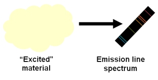
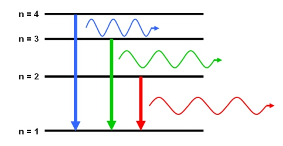

An emission line will appear in a spectrum if the source emits specific wavelengths of radiation. This emission occurs when an atom, element or molecule in an excited state returns to a configuration of lower energy. Since every atom, element and molecule has a unique set of energy levels, the emitted photon (‘packet’ of radiation) has a discrete wavelength, and an energy equal to the difference between the initial and final energy levels.


Emission lines are usually seen as bright lines, or lines of increased intensity, on a continuous spectrum. This is seen in galactic spectra where there is a thermal continuum from the combined light of all the stars, plus strong emission line features due to the most common elements such as hydrogen and helium.

Dataset: VizieR catalogue III/219, Spectral Library of Galaxies, Clusters and Stars (Santos et al. 2002)
See also:spectral line.